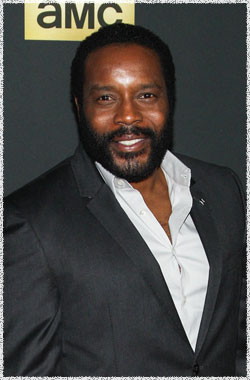

Чад Коулман
 Тайриз (актёр Чад Коулман) - является братом Саши. Он чувствует, что ему повезло остаться в живых. Он будет в состоянии вынести потерю, которую его группа вынесла с новыми выжившими из Вудбери.
Опытный актёр телевидения, кино и эстрады, Чад Коулман. получил хорошие отзывы критиков за свою работу на канале HBO, за роль в сериале Прослушка (The Wire). Ранее он снимался в сериале Я ненавижу свою дочь, производства Шерри Билсинг и Эллен Кример, а также получил постоянную роль в сериале Терминатор: Хроники Сары Коннор. Дополнительные роли включают сериалы: Обмани меня, Правильная жена, В Филадельфии всегда солнечно, в телевизионном фильме Boldly Going Nowhere, и в 2007 году в пилоте Wifey режиссера Реджинальд Хадлин и производства Куин Латифы.
На большом экране Коулман был замечен в фильме Несносные боссы, режиссера Сета Гордона с Дженнифер Энистон, Джейсоном Бейтманом, Колин Фарреллом и Кевином Спейси, а также в фильме Зелёный шершень режиссера Мишеля Гондри. Также его фильмография включает фильмы Как брат брату с Энтони Маки, Путь Карлито 2: Восхождение к власти с Джей Эрнандес.
Наиболее известен по фильмам:
Несносные боссы
Прослушка
Мыслить как преступник
Обмани меня
Правильная жена